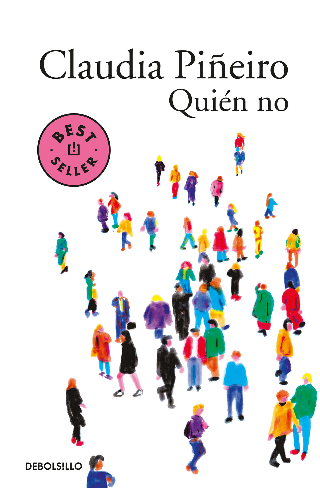

Playlist - Alquiler temporario
-
Esta cancion es ideal para poner de fondo en los momentos más tensos o introspectivos del cuento. Su tono melancólico y introspectivo, refleja la ansiedad, el silencio y la sensacion de estar encerrado que sufré la pareja principal.
-
Esta cancion funciona para acompañar la lectura, con su atmosfera miesteriosa y un poco triste, es perfecta para los momentos en que piensan y la perdida de su hijo e nostalgia, y tambien para los momentos donde aparecen los vecinos y la protagonista sospecha de ellos.
-
Esta cancion se relaciona con el cuento, en la letra, la cual habla sobre el abandono de la realidad, y la sencacion de desorientacion que se siente tras la perdida de algo importante, parecido a la desconexion con la realidad, y ausencia de su vida cotidiana luego de la perdida de su hijo, y como evita pensar sobre su hijo, y se distancia de su esposo.
-
Esta cancion transmite la sensacion de "no encajar" y de ser rechazado, observado y juzgado que viene con esto, y esa tension entre querer meterse en una vida de la cual no perteneces y el miedo de ser rechazado de esta o de meterte donde no debes, que hay en varias partes del libro.
-
Esta cancion esta relacionada en que tiene una atmosfera tranquila, pero al mismo tiempo emocional, que da una "calma", y una sensacion inquietante, similar a la del cuento, algo extraño que interrumpe en la vida cotidiana.